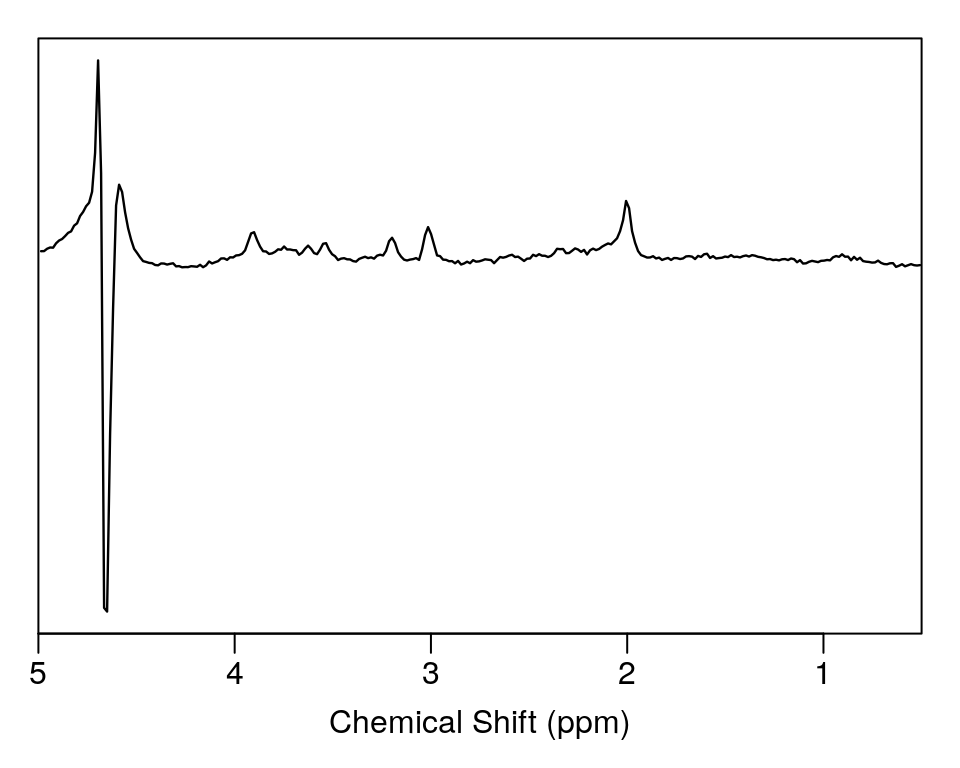
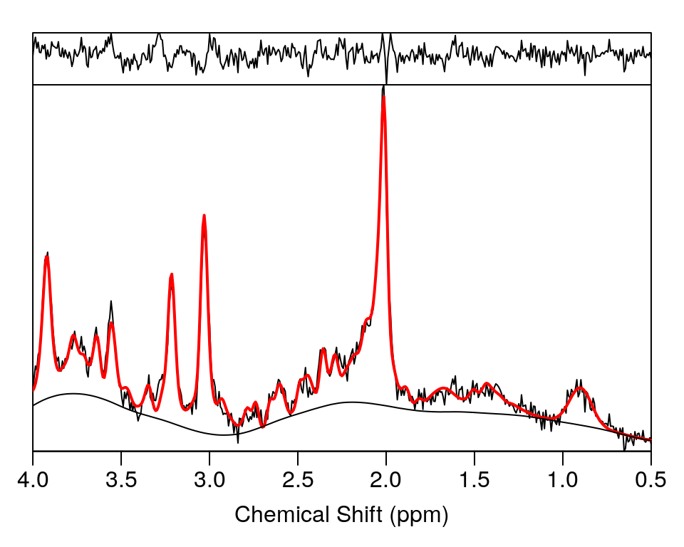

Introduction to spant
2018-04-18
spant-intro.RmdReading raw data and plotting
library(spant)
fname <- system.file("extdata", "philips_spar_sdat_WS.SDAT", package = "spant")
# import raw data
mrs_data <- read_mrs(fname, format = "spar_sdat")
# output basic data structure
print(mrs_data)## MRS Data Parameters
## ----------------------------------
## Trans. freq (MHz) : 127.7861
## FID data points : 1024
## X,Y,Z dimensions : 1x1x1
## Dynamics : 1
## Coils : 1
## Voxel resolution (mm) : 20x20x20
## Sampling frequency (Hz) : 2000
## Reference freq. (ppm) : 4.65
## Spectral domain : FALSE# plot data in the frequency domain
plot(mrs_data, xlim = c(5, 0.5))
Basic preprocessing
# apply water filter and align to tNAA resonance
mrs_proc <- hsvd_filt(mrs_data)
mrs_proc <- align(mrs_proc, 2.01)
plot(mrs_proc, xlim = c(5, 0.5))
Basis simulation
# simulate a typical basis set for short TE brain analysis
basis <- sim_basis_1h_brain_press(mrs_proc)
# output basis info
print(basis)## Basis set parameters
## -------------------------------
## Trans. freq (MHz) : 127.786142
## Data points : 1024
## Sampling frequency (Hz) : 2000
## Elements : 27
##
## Names
## -------------------------------
## -CrCH2,Ala,Asp,Cr,GABA,Glc,Gln,
## GSH,Glu,GPC,Ins,Lac,Lip09,
## Lip13a,Lip13b,Lip20,MM09,MM12,
## MM14,MM17,MM20,NAA,NAAG,PCh,
## PCr,sIns,Tau# plot basis signals
stackplot(basis, xlim = c(4, 0.5))Fitting
# perform VARPRO fitting to processed data
fit_res <- fit_mrs(mrs_proc, basis)##
|
| | 0%
|
|=================================================================| 100%# plot the fit estimate, residual and baseline
plot(fit_res, xlim = c(4, 0.5))